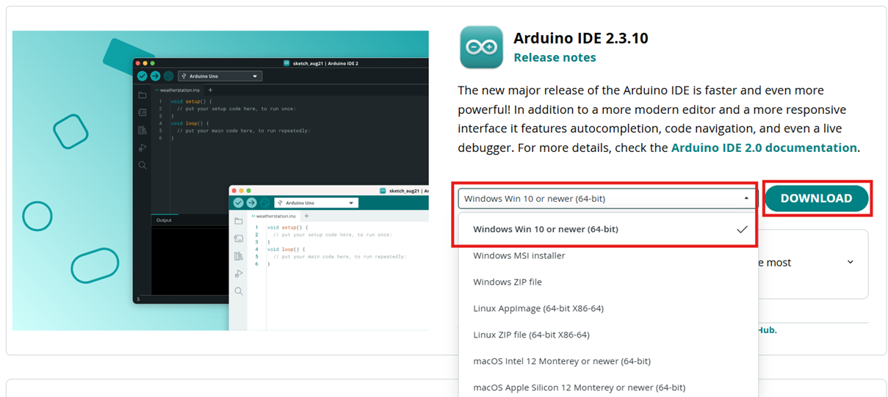
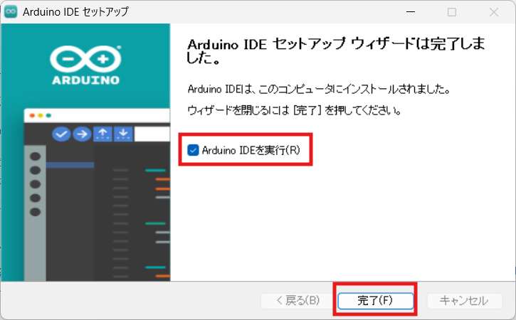
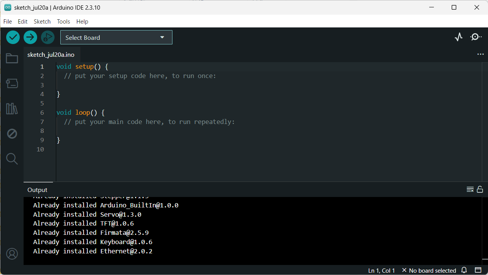
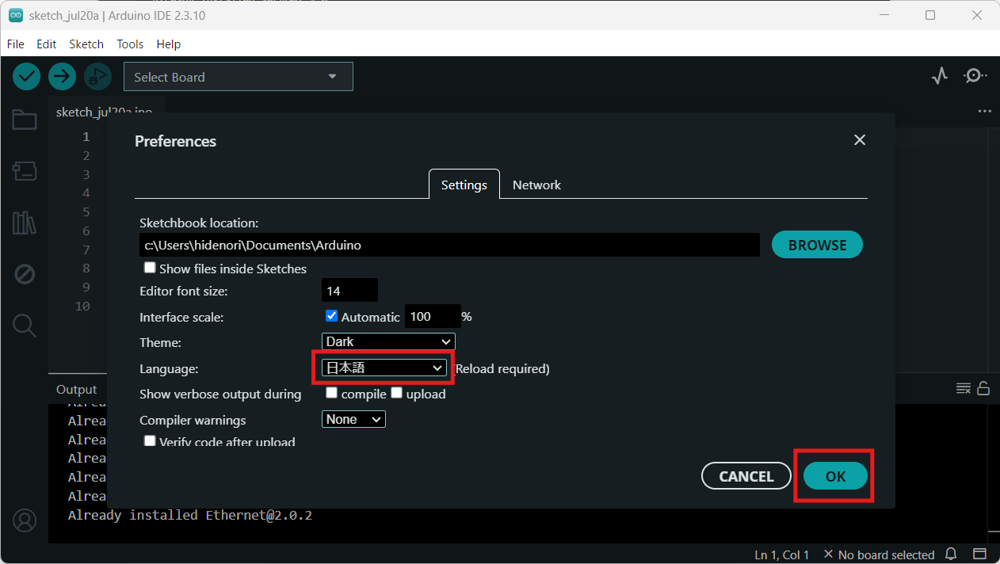
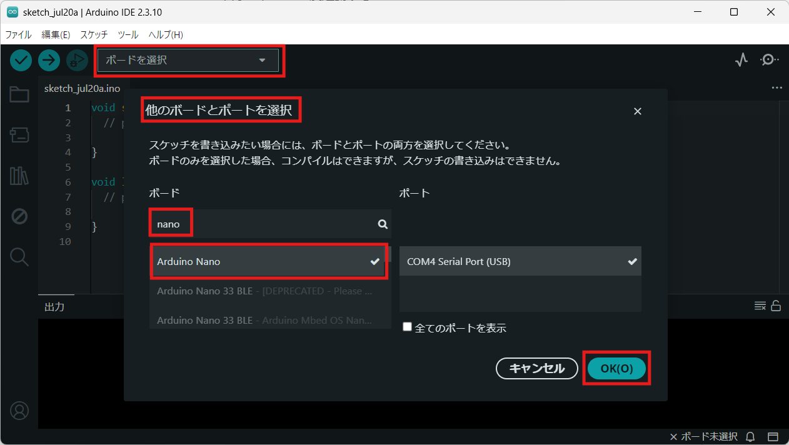
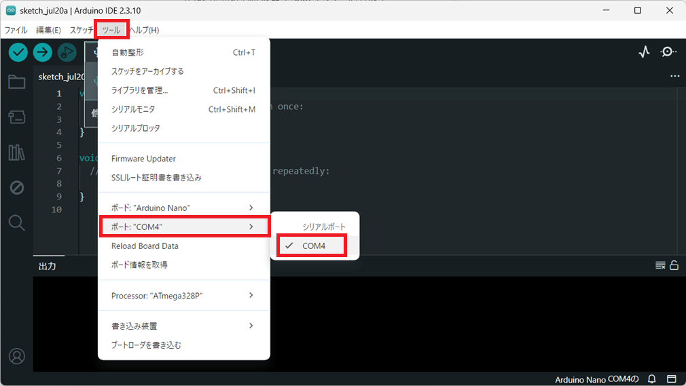
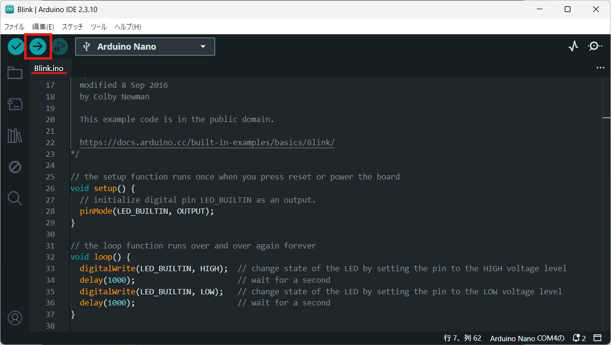
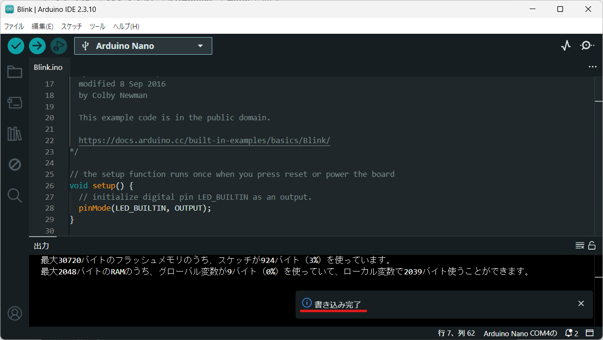
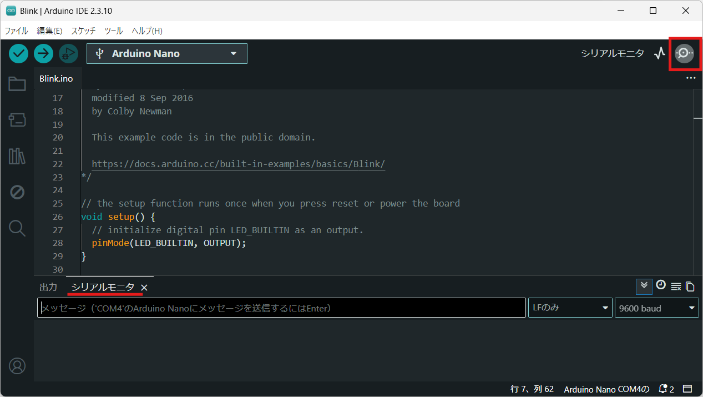

小・中学生のためのArduinoプログラミング講座
はじめる前の準備
基礎編を始める前に、パソコンへのソフト準備とArduino本体の接続を確認します。このページはたたき台です。画面キャプチャを追加しながら完成させます。
このページの前提：
パソコンはWindows、Arduino基板はUno系、ソフトはArduino IDE 2系を想定しています。別環境の場合は表記を調整してください。
このページの情報・画面キャプチャは、2026年7月19日時点（Arduino IDE 2.3.10／Windows）のものです。Arduino側の更新により、表示や手順が変わる場合があります。
1. 用意するもの
- パソコン（Windows推奨・この原稿の想定）
- Arduino本体（例：Uno）
- USBケーブル（データ通信できるもの）
- インターネット接続（インストール時）
2. Arduino IDEをインストールする
公式サイトからArduino IDEをダウンロードし、パソコンにインストールします。次の3つのまとまりで進めます。
2-1. ダウンロードする
- 公式のダウンロードページ（https://www.arduino.cc/en/software/）を開く
- Windows用を選んでダウンロードする（例：Windows Win 10 or newer 64-bit）
公式ダウンロードページで、Windows用を選ぶ画面

2-2. インストールする
- ダウンロードしたインストーラーを起動する
例：arduino-ide_2.3.10_Windows_64bit.exe（バージョンによりファイル名は変わります）
- 確認画面が出たら、発行元と公式サイトから取得したファイルかを確認する
- 使用許諾契約の画面で「同意する」を選ぶ
- インストール先の選択では、通常は「現在のユーザーのみにインストールする」を選ぶ
※パソコンを複数人で使う場合は、状況に合わせて選んでください
- 「次へ」を押す
- 「インストール」を押す
- 完了画面で、続けて起動するなら「Arduino IDEを実行」にチェックを入れたまま「完了」を押す
※あとで起動する場合は、チェックを外して「完了」を押します
インストール完了画面で「Arduino IDEを実行」にチェックが入っていることを確認する

2-3. 初めて起動する
- Arduino IDEを起動できることを確認する
- 初めて開いた画面の様子を確認する
初めて起動した直後のArduino IDE全体

2-4. 日本語表示にする
このあとの操作が分かりやすいよう、メニューを日本語に切り替えます。初めて起動した直後は英語表示のことが多いです。
- メニューから File → Preferences を開く
（日本語表示になっている場合は ファイル → 基本設定）
- Language（言語）で 日本語 を選ぶ
- OK を押す
- Arduino IDEをいったん終了し、もう一度起動する
- メニューが日本語（ファイル、編集、スケッチ など）になっていることを確認する
Preferences（基本設定）で Language を「日本語」にし、OKを押す

3. Arduino本体をパソコンにつなぐ
USBケーブルでArduinoとパソコンをつなぎます。電源ランプが点灯することを確認してください。
画像予定：assets/images/start/05-board-usb-connect.jpg
Arduino本体とUSBケーブル接続の実物写真（机の上など）※後日追加
4. ボードとポートを選ぶ
Arduino IDEで、使っている基板の種類と接続ポートを選びます。（ここからは日本語メニュー想定）
- 上部の「ボードを選択」から「他のボードとポートを選択…」を開く
- ボード名を検索して選ぶ（例：Arduino Nano）
- 右の一覧からポート（例：COM4）を選ぶ
- OKを押す
- 必要なら ツール → ポート でも、選んだポートにチェックが付いていることを確認する
「他のボードとポートを選択」でボードとポートを選ぶ

ツール → ポート で、接続ポートを確認・変更する

5. サンプルを書き込んでみる
最初の確認として、LED点滅（Blink）などのサンプルをArduinoへ書き込みます。
- ファイル → スケッチ例 → 01.Basics → Blink を開く
- チェック（検証）を行う
- 矢印ボタンで書き込む
- 「書き込みが完了しました」などを確認する
サンプル「Blink」を開き、書き込み（→）ボタンを押す

書き込みが終わると「書き込み完了」と表示される

画像予定：assets/images/start/10-blink-led.jpg
オンボードLEDが点滅している実物写真（任意）
6. シリアルモニタを開く
基礎編では、パソコン画面に文字を出す「シリアルモニタ」を使います。開き方を確認しておきましょう。
- 画面右上の シリアルモニタ を押す（または ツール → シリアルモニタ）
- 下に「シリアルモニタ」パネルが開くことを確認する
シリアルモニタを開いた画面（下のパネル）

7. うまくいかないとき
1. ポートが見つからない
USBケーブルが「充電専用」ではないか、差し直し、別のUSB口を試してください。
2. 書き込みに失敗する
ボード名が本体と合っているか、ポートが正しいかを再確認してください。
3. IDEが起動しない／インストールできない
管理者権限やウイルス対策ソフトの影響がないか、公式の手順をもう一度確認してください。
準備ができたら、基礎編の第1回へ進みましょう。
ご意見・改善要望
匿名でコメントを送れます。サイトには掲載せず、管理者だけが確認します。個別の返信は行いません。
匿名でコメントを送る